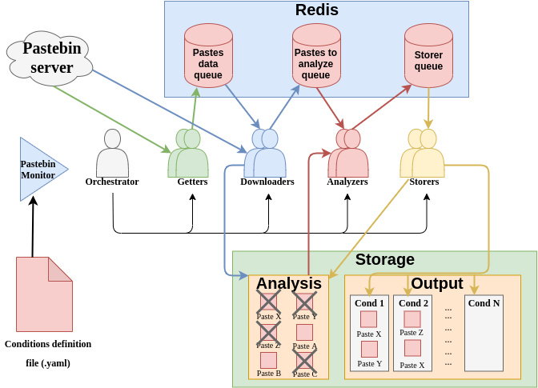

Pastemon
Description
Pastemon is a python3-based multiprocess framework aim to allow you monitor the public pastebins that are continuously uploaded to https://pastebin.com. It allows you to match content inside the pastes based on rules written by the user. So far, you are able to match fixed strings or regexes. If some of the rules defined matches, the entire pastebin is stored.
Very interesting stuff can be found. Start thining on cool regexes ;).
Sourcecode
The source code can be find here
Requirements
Pastemon makes use of the scrapping interface provided by Pastebin. In order to use it, you should whitelist your IP. Therefore, to use Pastemon, you should have a PRO account in Pastebin, otherwise your IP will be blocked after a few seconds.
The necessary libraries in order to run this tool, are written down in the requirements.txt.
Install
To install the tools and necessary libraries, it's recommended to use a particular virtual env:
virtualenv pastemon -p python3
source pastemon/bin/activate
cd pastemon
pip install -r requirements.txt
python pastemon.py ARGUMENTS
How to use it
usage: pastemon.py [-h] [-d DOWNLOADERS] [-g GETTERS] [-a ANALYZERS]
[-s STORERS] [-r ANALYSIS_DIR_PATH]
[-o OUTPUT_DIR_PATH] [-c CONDITIONS_FILE_PATH]
[-t TIME_TO_WAIT] [-n AMOUNT_OF_PASTES_TO_FETCH]
optional arguments:
-h, --help show this help message and exit
-d DOWNLOADERS Amount of downloaders (will download the pastebin
content)
-g GETTERS Amount of getters (will check for new pastebins)
-a ANALYZERS Amount of analyzers (will analyze the pastebin's
content)
-s STORERS Amount of storers (will either store or delete a
pastebin)
-r ANALYSIS_DIR_PATH Path to store the pastes to be analyzed (temporary)
-o OUTPUT_DIR_PATH Path to store the pastes that accomplished some
condition
-c CONDITIONS_FILE_PATH
Path to the YAML conditions file
-t TIME_TO_WAIT Amount of time (in secs) to wait between each time it
goes for new pastes. Suggested and default (180)
-n AMOUNT_OF_PASTES_TO_FETCH
Amount of pastes to fetch each time it goes for new
pastes. Maximun and default is 250
How does it work
If you are interested in the full architecture of the tool, here you'll find a detailed description:
 As it is depicted in the picture, there are several components involves in the framework: Pastebin Server: This is the only thing that is not controlled by the user. It represents the host where the pastebins are uploaded. Redis: A redis instance with couple of queues to deal with the async between several processes. Storage: This is any storage chosen by the user, used to store each pastebin either temporary or definitively (if it matches some rule). Pastebin Monitor: The actual and initial Python script (pastemon.py) which received the arguments to configure the whole tool. Conditions definition file: A .yaml file where the rules/conditions are defined. Orchestrator: Naive Python object in charge of initializing the rest objects and validating the input. Getters: Python objects in charge of pulling ONLY the new pastes (if there are) and pushing the data related to them (URL, name, etc) to the Pastes data queue. Downloaders: Python objects in charge of pulling the corresponding data of each new pastebin from the pastes data queue, to later download the actual content of each of them. Once the contest is downloaded, it is stored in the Storage (in particular in the Analysis Directory, flag -r), the related info (path to the storage) is pushed to the Pastes to analyze queue. Analyzers: Python objects in charge of analyzing the actual content (after getting the path from the Pastes to analyze queue). If there is rule that matches, the path to it togeteher with the action that should be carried out (either store it or delete it) is pushed to the Storers queue. Storers: Python objects in charge of either deleting the patebins that didn't match or moving them in the corresponding directory. For each condition/rule defined a directory, inside the output directory provided as parameter, is created.
Defining rules / conditions
In order to write new rules/conditions to be matched, a .yaml file with the following structure should be provided:
[cond1]:
[match_cond_1_1]
[match_cond_1_2]
...
[cond2]:
[match_cond_2_1]
[match_cond_2_2]
...
...
[condn]:
[match_cond_n_1]
[match_cond_n_2]
...
- [condX]: Will be used as the name of the rule/condition, therefore it will exist a directory with this name where all the matched pastebins will be placed.
- [match_cond_X_Y]: WIll be each of the parts of the condition that are going to be actually checked. The list of possible parameters up to date are:
- regex: If you want to match some regex. (Only one per condition, can't be used with string in the same condition)
- string: If you want to match a fixed string. (Only one per condition, can't be used with regex in the same condition)
- icase: True or False. If True, the match is case insensitive. By default, is False.
- times: A Natural number. Amount of time that the string/regex should match. By default, 1.
Take into account that backslashes "\" must be escaped!!!!!
Besides the framework itself, a separate script called tester.py is shipped. This script allows you to manually/quick understand against which conditions/rules a certain "pastebin" will match:
python tester.py -c test.yaml -p test.pastebin
To see a complete example, head to the next section
Example
python pastemon.py -r analysis -o output -c example.yaml
any_gmail_email:
regex: "[^@\\s]+@gmail.com"
icase: True
my_name:
string: "lmkalg"
icase: True
times: 5
my_password:
string: "34syP4ssW0rd1234"
Deeper description: 1. The first condition named "any_gmail_email" will match only when the an email of the gmail domain (no matter the case) is present in the pastebin. In positive case, it will store the pastebin inside the output/any_gmail_email/ directory. 2. The second condition named "my_name" will match only when the string "lmkalg" (no matter the case) is present more than 5 times inside the pastebin. In positive case, it will store the pastebin inside the output/my_name/ directory. 3. The third and last condition named "my_password" will match only when the string "34syP4ssW0rd1234" appears in the pastebin exactly with the same case each letter. If only one of them differs, the match won't occur. In positive case, it will store the pastebin inside the output/my_password/ directory.
Future work
- Be able to match more than one string/regex in the same condition (near future)
- Be able to monitor by user.
- Extend not only to pastebin, but also to another sources.